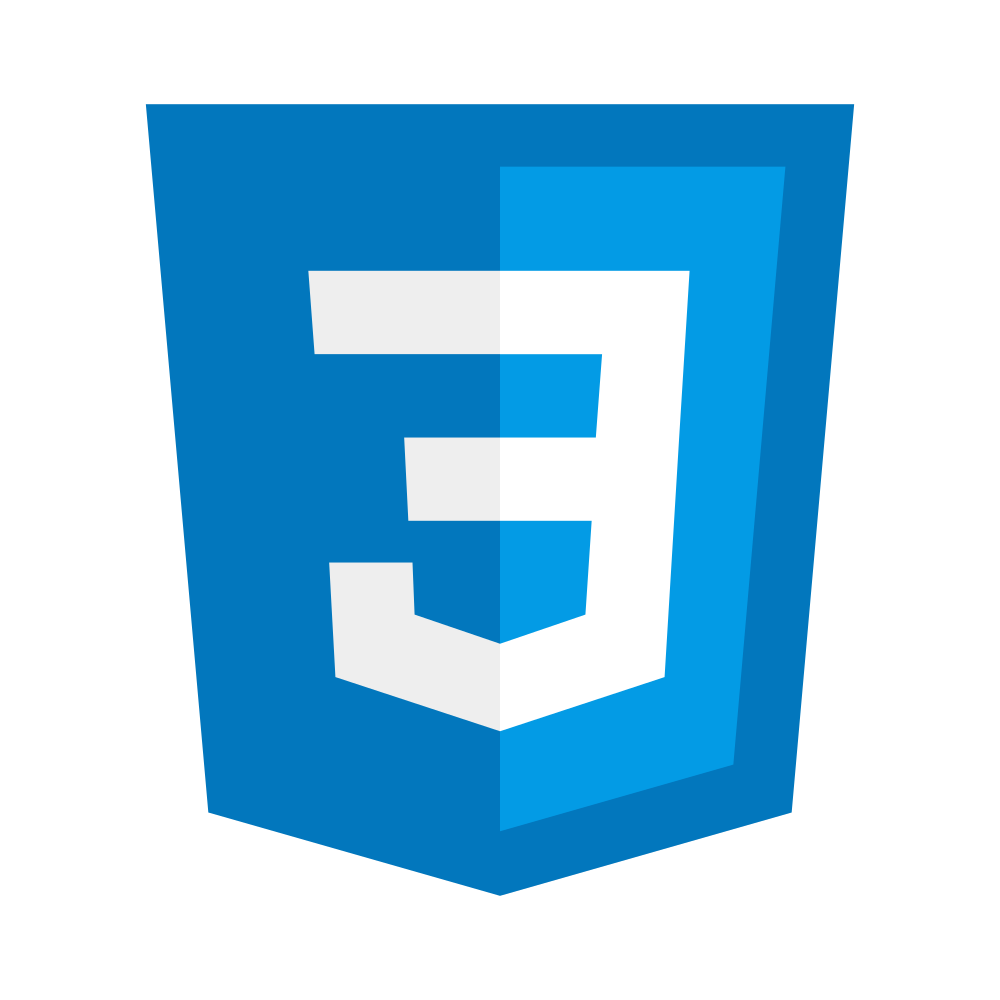

Otavie
UI/UX|Web Dev|Python

< Otavie/ >
A UI/UX Designer and a Frontend Developer.
I build beautiful websites/web applications with HTML, CSS, JavaScript and its frameworks (React and Vue).
Python and JavaScript are my programming language of choice.
I have basic understanding of C, PHP and Java.
At present, Otavie is a master's student in Computer Science at Covenant University (CU), Ota, Nigeria researching in the field of Digital Twins (DTs) and Recommendation System (RSs), with great bibliometric analysis and science mapping skills.